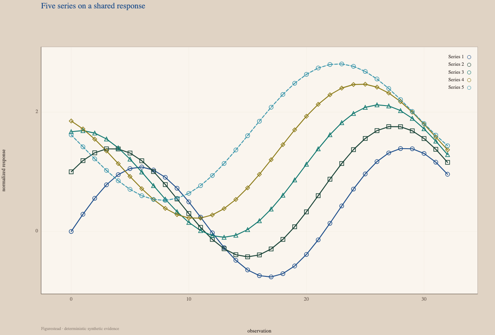
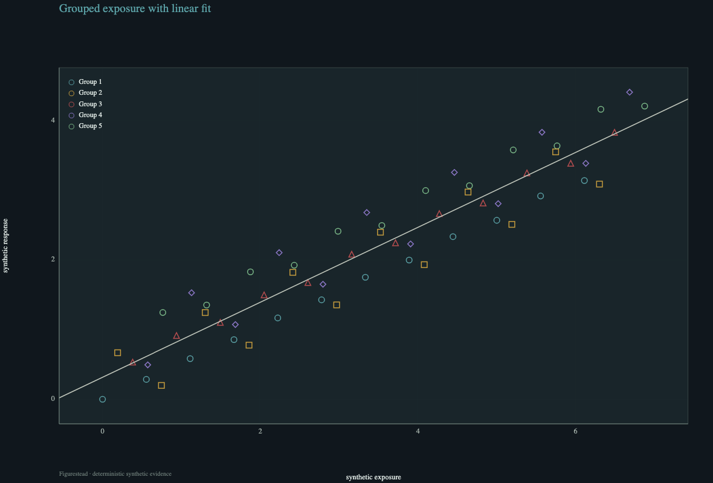
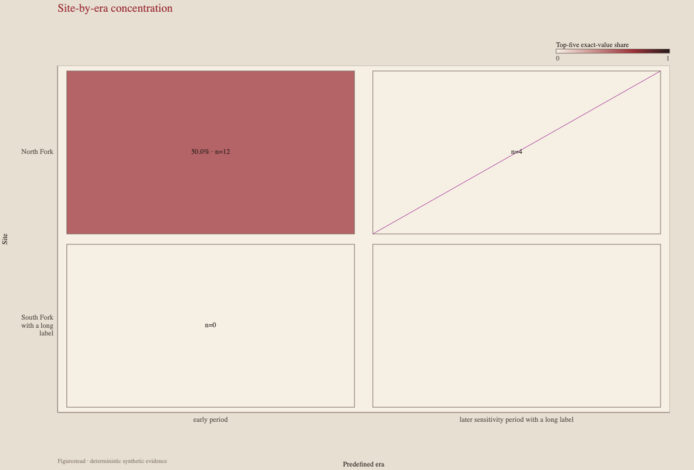
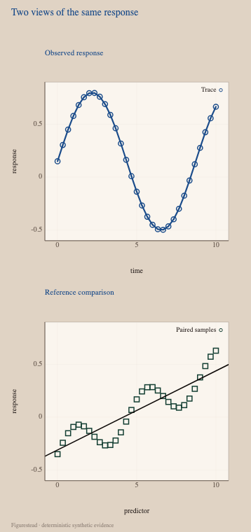
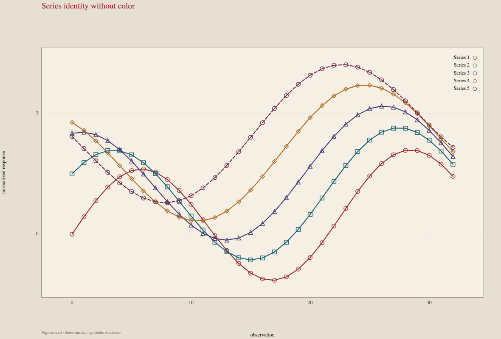
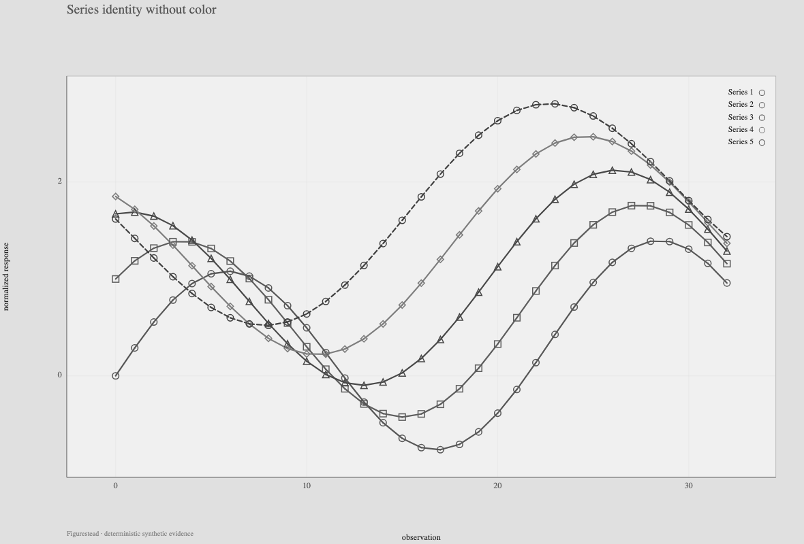
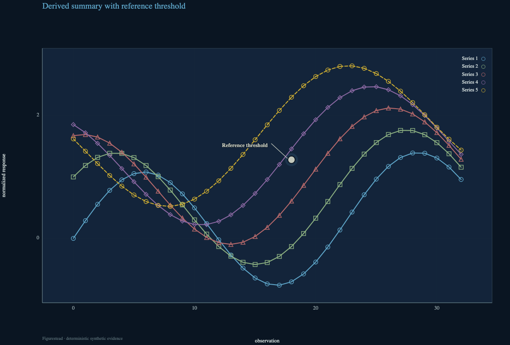
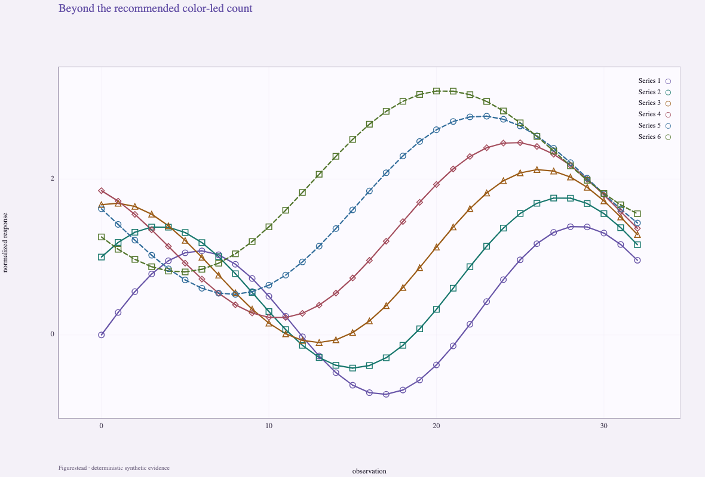
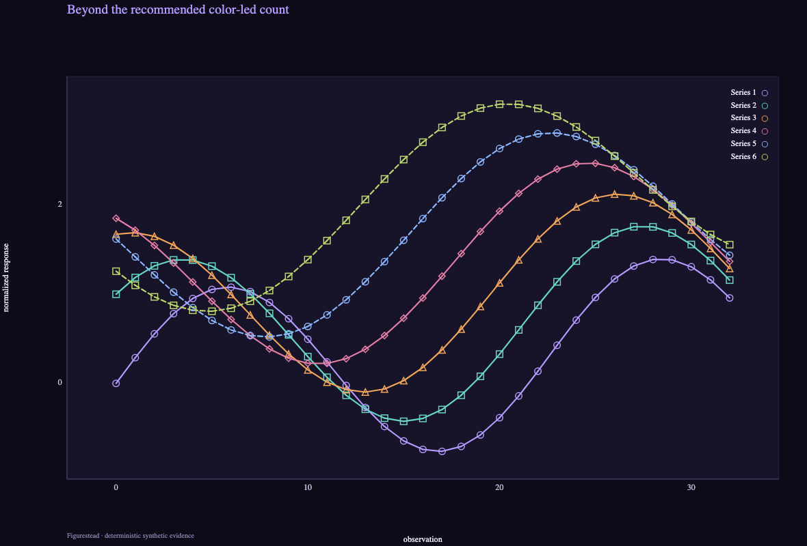

Deterministic synthetic evidence
Evidence atlas
Eight focused cases make the public alpha's visual and scientific boundaries inspectable.
01
Five series on a shared response
Five deterministic series share one response scale.
Inspect: Five line identities remain legible on one scale without implying separate axes.

{kind=link}
Figure description
Five differently colored response series share the same horizontal observation axis and vertical response scale. Distinct markers and line styles repeat along each curve, so identity is not carried by hue alone.
02
Grouped exposure with linear fit
Five synthetic exposure groups are plotted against one shared linear fit.
Inspect: Hollow circles, squares, triangles, and diamonds remain separable from the pale fitted line, including where marks cross it.

{kind=link}
Figure description
Five marker groups form an upward cloud across exposure and response. A single pale fitted line runs through all groups; hollow marker shapes and colored edges remain distinguishable where observations cross the fit.
03
Categorical response matrix
Four site-by-era cells encode exact-value share and sample count.
Inspect: The 50.0% · n=12 label, n=4 diagonal cell, n=0 empty state, and blank cell remain visually distinct.

{kind=link}
Figure description
A two-by-two site and era matrix uses four different evidence states: a filled 50.0% cell with n=12, a diagonal comparison with n=4, an explicitly labeled n=0 state, and a blank cell. Labels remain part of the comparison rather than relying on fill alone.
04
Two views of the same response
The integrated phone layout keeps both views legible and distinct.
Inspect: Both panels remain separately titled and legible at the narrow figure width.

{kind=link}
Figure description
Two compact panels are stacked vertically inside the narrow figure. The upper panel is titled Observed response and the lower panel Reference comparison; each retains its own plotted marks, axes, and title.
05
Series identity without color
The canonical chromatic rendering and a deterministic true-grayscale derivative show the same data and geometry.
Inspect: Marker and dash differences preserve series identity after hue is removed.
Method: The grayscale derivative decodes sRGB to linear light, computes Y = 0.2126R + 0.7152G + 0.0722B, re-encodes sRGB, and preserves alpha. Theme and palette data are unchanged.

{kind=link}

{kind=link}
Figure description
The two conditions preserve the same five curves, coordinates, markers, and dash patterns. The left view retains the original hues; the right removes hue through the documented luminance transform. Rings, squares, triangles, diamonds, and line patterns remain available for matching series between views.
06
Summary and threshold remain distinct
Five response series are shown with a derived summary mark and a labeled reference threshold.
Inspect: The pale circular summary mark, its dark halo, and the threshold's labeled leader remain distinct from every colored series.

{kind=link}
Figure description
Five colored response lines cross the plot. A pale circular summary with a dark surrounding halo occupies a separate evidence role, while a labeled threshold leader points to a reference level rather than following any series.
07
Beyond the recommended color-led count
Six-series stress evidence uses redundant encodings beyond the recommended color-led count.
Inspect: Six-series identity depends on redundant marker and dash encodings beyond each signature theme's color-led recommendation.

{kind=link}

{kind=link}
Figure description
Each paired signature-theme figure contains six crossing series, exceeding the three-series color-led guidance for these themes. Repeating marker shapes and dash patterns carry identity where the expanded set makes hue alone insufficient.
08
Publication-sized output
Digital paper evidence measures a 6.372 pt minimum label; no physical printer proof is claimed.
Inspect: Labels remain above Figurestead's 6 pt project floor at both output widths; this is not physical printer proof.
Method: The deterministic paper profile computed label sizes for the specified 89 mm and 183 mm digital outputs; 6.372 pt was the smallest recorded label. The 6 pt comparison is an internal project criterion, not an external standard.
Web previews are normalized to the available columns for comparison. Equal webpage columns do not represent equal physical inspection scale; use the canonical links for full-resolution evidence.

{kind=link}

{kind=link}
Figure description
The paired outputs preserve their distinct 89 mm single-column and 183 mm double-column specifications. Both show five marked line series and publication typography; the webpage scales them into comparison columns, while the linked canonical files retain their original pixel dimensions.